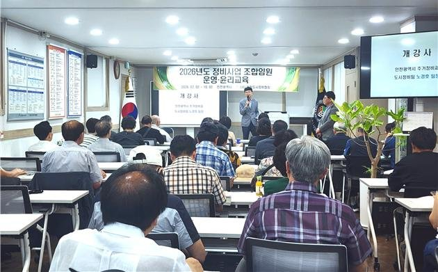
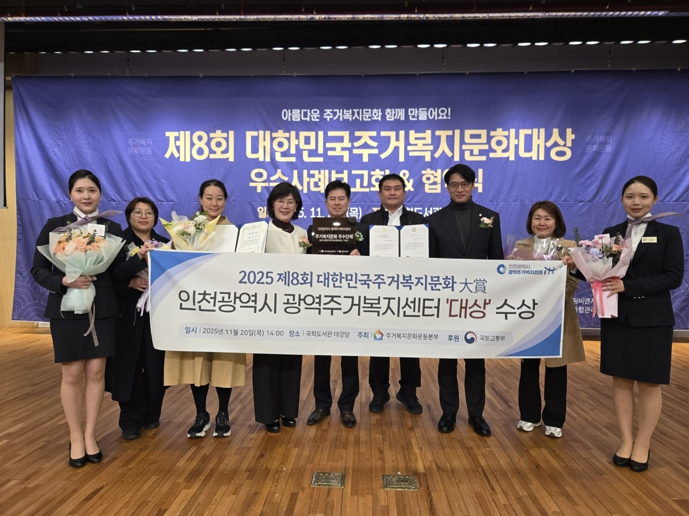
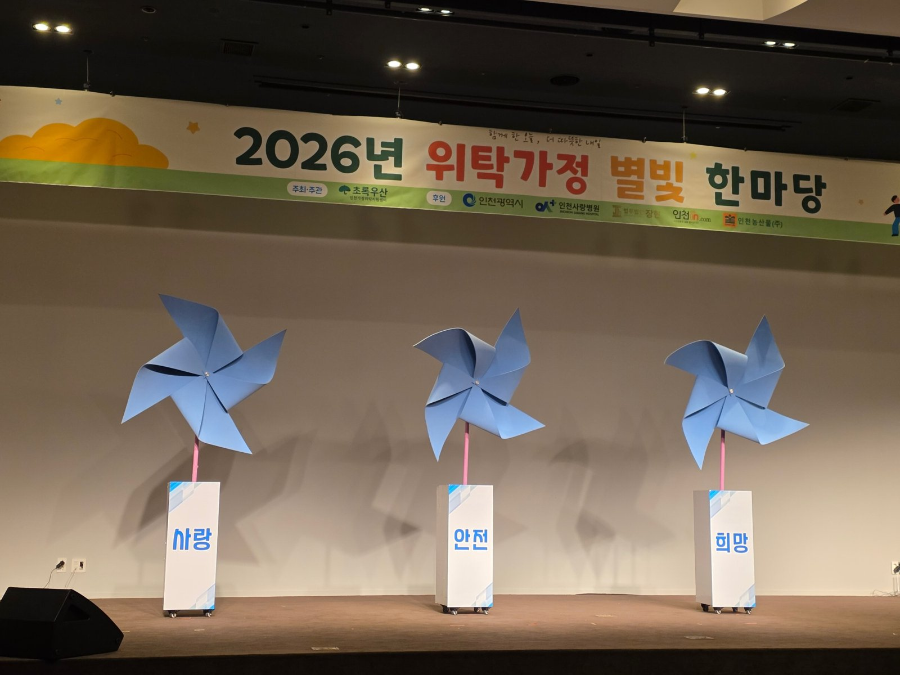

인천시, 재개발 첫 관문 줄이고 주거상담 한 창구로 묶는다
위탁가정 180여 명 격려…집과 가정 둘러싼 행정 셋
AI경제저널=김갑봉 기자 | 인천시(시장 박찬대)가 재개발·재건축 사업의 첫 관문인 사전컨설팅을 줄인다고 밝혔다. 청년부터 고령자까지 주거상담도 한 창구로 묶는다.
시는 지난 4일 정비사업 사전컨설팅 운영 개선안을 내놨다. 지난 5일에는 위탁가정과 관계자 180여 명이 모인 '2026 위탁가정 별빛 한마당'을 열었다. 지난 6일에는 LH주거복지정보(주), 인천광역주거복지센터와 업무협약을 맺었다. 셋 모두 시민이 사는 집과 아이가 자라는 가정을 둘러싼 행정이다.

재개발 주민, 첫 단계 기다림 줄어든다
사전컨설팅은 정비사업 초기에 정비계획이 적정한지 보고 사업 방향을 잡아 주는 절차다. 정식 이름은 정비사업 사전타당성 검토다. 지금까지는 관계기관 협의에서 건축·교통·경관 같은 세부 사항까지 다뤄 협의에만 6개월 이상 걸렸다.
시는 이달부터 제출서류를 줄이고 협의를 정비구역 지정 요건, 토지이용계획, 정비기반시설 배치로 좁힌다. 세부 사항은 뒤따르는 심의 단계로 넘긴다. 2027년에는 「2030 인천광역시 도시·주거환경정비기본계획」을 바꾼다. 사전컨설팅을 의무 절차에서 선택 절차로 돌리기 위해서다.
시는 사업 기간을 앞당겨 주민의 행정·경제적 부담을 덜고 주택공급을 촉진한다고 밝혔다. 다만 단축 목표는 "대폭"이라는 말뿐이다. 몇 개월로 줄일지는 발표에 없다.
시는 지난달 정비사업 시민아카데미를 열면서 복잡한 제도와 절차를 몰라 주민 사이 갈등과 분쟁이 잦다고 밝혔다. 지난 7월에는 조합 임원 법정 운영·윤리교육을 인천에서 처음 열었다. 개정 「도시 및 주거환경정비법」 제115조가 의무로 정한 교육이다. 제1기에만 조합 임원 70명이 교육을 받았다.
유광조 인천시 도시균형국장은 "이번 제도 개선은 현장의 목소리를 적극 반영해 사전컨설팅의 효율성과 실효성을 높이는 데 중점을 뒀다"고 말했다.
주거비에 눌린 가구, 상담 창구 하나로
세 기관은 협약에 따라 세 가지를 함께한다. 생애주기별 맞춤형 주거상담, 공공임대주택 같은 주거지원 정보 안내, 실무협의회 운영이다. 청년, 신혼부부, 중장년, 고령자마다 다른 주거 어려움을 한 창구에서 듣고 필요한 서비스로 잇는다는 것이다.
시가 핵심 주거복지 정책으로 꼽는 것이 주거급여다. 올해 선정기준은 4인 가구 월 소득인정액 311만7474원 이하다. 4인 임차가구는 월세를 달마다 최대 46만3000원까지 받는다. 자가가구는 집이 낡은 정도에 따라 590만 원에서 1601만 원까지 수선을 지원받는다.
상담 수요도 적지 않다. 시는 지난해 부평구청과 서구청에서 격주로 연 찾아가는 주거복지 상담실에서 29회 동안 1079건을 상담했다. 한 번 열 때마다 37건꼴이다(AI경제저널 계산). 올해 3월부터는 이 상담실이 인천 전역을 돈다.
이번 협약은 정보와 상담을 잇는 일이다. 새 공공임대주택을 짓거나 지원금을 늘리는 내용은 없다. 협약 기관이 쓸 예산과 상담 인력, 연간 목표도 발표에 없다.
박찬대 시장은 "이번 업무협약으로 시민들이 생애주기에 맞는 주거지원 정보를 원스톱으로 안내받을 수 있는 기반이 마련됐다"고 말했다. 주거급여는 주소지 행정복지센터나 복지로에서 신청한다. 안내는 주거급여 콜센터(1600-0777)가 맡는다.

보호가 필요한 아이, 시설보다 가정에서
지난 5일 송도 센트럴파크호텔에서 위탁가정 별빛 한마당이 열렸다. 위탁부모와 위탁아동, 유관기관 관계자 등 180여 명이 모였다. 위탁부모 5명과 가정위탁지원센터 종사자 1명이 표창을 받았다. 자립준비청년으로 꾸린 클래식 연주단 '오블리주 앙상블'이 축하 무대에 올랐다.
시는 보호가 필요한 아이를 시설보다 가정에서 먼저 돌보는 쪽으로 간다. 원가정복귀지원센터가 가정형 보호 우선배치를 검토한다. 학대 피해 아동이 본래 가정으로 돌아가도록 돕는 원가정 복귀 시범사업도 국내에서 처음 하고 있다. 군·구가 풀기 어려운 사례는 시 사례결정위원회가 직접 심의한다.
인천의 위탁가정 수와 위탁아동 수, 위탁가정에 주는 양육비 액수는 이번 보도자료에 없다. 지난해 12월 시가 늘렸다고 밝힌 가정위탁 보호아동 양육비도 금액은 적혀 있지 않다.
김경선 인천시 여성가족국장은 보호가 필요한 아동이 가정에서 안정적으로 자라도록 가정형 보호 지원에 더욱 힘쓰겠다고 말했다.

문의는 인천시 주거정비과(032-440-3442), 주택정책과(032-440-4742), 아동정책과(032-440-2883)가 받는다.
참고문헌
- 인천광역시 주거정비과(2026). 인천시, 정비사업 속도 낸다. 사전컨설팅 운영체계 대폭 개선(보도자료). 2026년 11월 4일. https://www.incheon.go.kr/IC010205/view?repSeq=DOM_0000000015886683
- 인천광역시 주택정책과(2026). 청년부터 고령층까지…인천시, 생애주기 맞춤형 주거 안전망 펼친다(보도자료). 2026년 11월 6일. https://www.incheon.go.kr/IC010205/view?repSeq=DOM_0000000015918564
- 인천광역시 아동정책과(2026). 인천시,‘2026 위탁가정 별빛 한마당’개최… 가정형 보호 뜻 되새겨(보도자료). 2026년 11월 5일. https://www.incheon.go.kr/IC010205/view?repSeq=DOM_0000000015913971
- 인천광역시 주택정책과(2026). 인천시, 주거복지 정책 강화… 주거급여 지원 확대(보도자료). 2026년 2월 4일. https://www.incheon.go.kr/IC010205/view?repSeq=DOM_0000000014088940
- 인천광역시 주택정책과(2026). 주거 고민 현장에서 해결…인천시,‘찾아가는 주거복지 상담실’운영(보도자료). 2026년 3월 25일. https://www.incheon.go.kr/IC010205/view?repSeq=DOM_0000000014402343
- 인천광역시 건축계획과(2021). 인천시,‘주거복지센터’개소로 주거안정 도모(보도자료). 2021년 2월 23일. https://www.incheon.go.kr/IC010205/view?repSeq=DOM_0000000002004521
- 인천광역시 아동정책과(2025). 인천시, 제1회 사례결정위원회 개최… 아동 맞춤형 보호체계 강화(보도자료). 2025년 9월 30일. https://www.incheon.go.kr/IC010205/view?repSeq=DOM_0000000013224558
- 인천광역시 아동정책과(2026). 인천시, 아동보호 체계 강화‘고난도 아동보호 사례’직접 해결(보도자료). 2026년 4월 20일. https://www.incheon.go.kr/IC010205/view?repSeq=DOM_0000000014568566
[사진 출처]
- [사진1] 인천광역시 보도자료 「인천시, 정비사업 조합임원등 운영·윤리교육 첫 실시」 붙임 「교육사진.jpg」, 공공누리 제1유형, 2026.7.2., https://www.incheon.go.kr/IC010205/view?repSeq=DOM_0000000015068705
- [사진2] 인천광역시 보도자료 「인천광역시 광역주거복지센터,‘대한민국 주거복지 문화대상’대상 수상」 붙임 「주거복지문화대상.jpg」, 공공누리 제1유형, 2025.11.20., https://www.incheon.go.kr/IC010205/view?repSeq=DOM_0000000013565360
- [사진3] 인천광역시 보도자료 「인천시,‘2026 위탁가정 별빛 한마당’개최… 가정형 보호 뜻 되새겨」 붙임 「IMG_1018.jpg」, 공공누리 제1유형, 2026.11.5., https://www.incheon.go.kr/IC010205/view?repSeq=DOM_0000000015913971
관련기사
- 인천시 아동복지관 루원시티로…12년 만에 청사 두 배
- [부동산 브리핑] 검단의 새집 727호는 비어 있는데 전셋값은 오른다
- 인천 공인중개사 연수교육 미수료자, 12월까지 6차례 추가 교육
저작권자 © AI경제저널 무단전재 및 재배포, AI학습 및 활용 금지